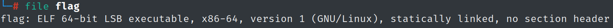

{Papa brought me a packed present! let's open it.
Download : http://pwnable.kr/bin/flag
This is reversing task. all you need is binary}
downloading and looking at the binary


hmmm
trying to get a read:
readelf -a we get nothing (and a complete mess)


also with objdump

strings has one piece of info (mostly load of crap)

gdb - no main func, and practically nothing

ghidra - same, only thing that comes up is the "packed with the UPX"
notice the fat clue at the instructions of the challange
"Papa brought me a packed present! let's open it."
after reading a bit, we are dealing with a file packekd by a lossless algoritm called UPX
"Ultimate Packer for eXecutables (UPX) is a free and opensource executable packer."
there are methods for manual unpacking, though there's also:
upx -d <filename> (-d for decompress)
after decompressing, looking at the file, its not stripped

in gdb, breakpoint at main and disas

look who's here..
well, my asm skills are not that great yet, neither my debugging with gdb.
so i'll just open the file in ghidra to make life simple
in ghidra, we see our flag right away

going to that address

done